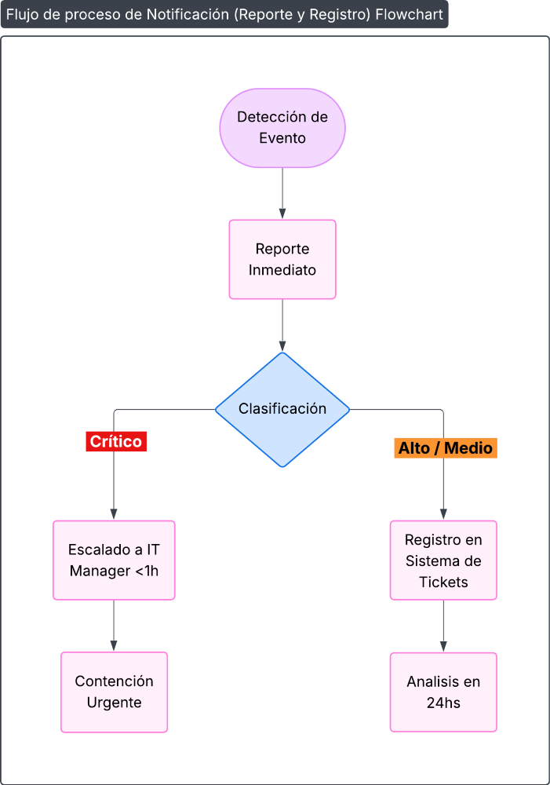

Procedimiento de Respuesta a Incidentes de Seguridad
1 OBJETIVO
Establecer un proceso estructurado para la gestión y respuesta a incidentes de seguridad de la información en PRODISMO SRL, con el fin de contener, erradicar y recuperarse de manera efectiva de incidentes de seguridad, minimizando el impacto en las operaciones del negocio y cumpliendo con los controles de ISO/IEC 27001:2022, así como con los requisitos de gestión de incidentes del marco TISAX.
2 CLASIFICACIÓN DE INCIDENTES
2.1. Niveles de Criticidad (TIER)
| TIER | Descripción | Ejemplos | Tiempo de Respuesta |
|---|---|---|---|
| TIER 1 - Crítico | Impacto severo en operaciones o datos críticos | Ransomware, filtración masiva de datos |
Inmediata (menos de 15 min) |
| TIER 2 - Alto | Impacto significativo en operaciones | Ataque DDoS, acceso no autorizado a sistemas críticos | Menos de 1 hora |
| TIER 3 - Medio | Impacto limitado en operaciones | Malware en estación de trabajo, phishing dirigido | Menos de 4 horas |
| TIER 4 - Bajo | Impacto mínimo o nulo en operaciones | Intentos de acceso fallidos, spam masivo | Menos de 24 horas |
3 PROCESO DE RESPUESTA A INCIDENTES
3.1. Fase 1: Detección y Reporte
Canales de Reporte:
- Línea directa Departamento IT: +54 9 351 521-7958 +54 9 3541-66 9837
- Emails: itprodismo@prodismo.com eferrari@prodismo.com gmontalbetti@prodismo.com
- Formulario Reporte de Incidentes: F161-IT-1 Formulario de Reporte de Eventos por Departamento
- Responsable de área directo: Para empleados sin acceso directo
Información Mínima de Reporte:
- Qué ocurrió y cuándo
- Sistemas o datos afectados
- Impacto observado
- Persona que reporta y contacto
3.2. Fase 2: Contención Inmediata
Acciones por Tipo de Incidente:
| Tipo Incidente | Acciones de Contención | Responsable |
|---|---|---|
| Malware/Ransomware | Desconectar red, aislar sistemas | DIT / Armanet |
| Acceso No Autorizado | Bloquear cuentas, cambiar credenciales | RSI |
| Fuga de Datos | Bloquear accesos, revisar logs | RSI |
| Ataque DDoS | Activar mitigación con ISP | Armanet |
3.3. Fase 3: Análisis e Investigación
Herramientas de Análisis:
- SIEM: Correlación de eventos y logs
- EDR: Análisis de endpoints afectados
- Network Forensics: Análisis de tráfico de red
- Memory Analysis: Análisis de volcados de memoria
Evidencias a Recolectar:
- Logs de sistema y aplicaciones
- Imágenes forenses de discos
- Capturas de tráfico de red
- Testimonios de usuarios afectados
3.4. Fase 4: Erradicación y Recuperación
Procedimiento de Erradicación:
- Eliminar componentes maliciosos identificados
- Aplicar parches de seguridad necesarios
- Cambiar credenciales comprometidas
- Fortificar configuraciones de seguridad
Procedimiento de Recuperación:
- Restaurar sistemas desde backups validados
- Verificar integridad de datos restaurados
- Reestablecer servicios gradualmente
- Validar funcionalidad operacional
3.5. Fase 5: Comunicación
Matriz de Comunicación:
| Audiencia | TIER 1 | TIER 2 | TIER 3/4 | Canal |
|---|---|---|---|---|
| Alta Dirección | Inmediata | Menos de 1 hora | Menos de 4 horas |
Reunión presencial o Videollamada |
| Empleados | Menos de 2 horas | Menos de 4 horas | Menos de 8 horas | Email/MS Teams |
| Clientes | Según impacto | Según impacto | No requerida | Comunicación formal |
| Autoridades | Según ley | Según ley | No requerida | Vía legal |
3.6. Fase 6: Lecciones Aprendidas
Actividades Post-Incidente:
- Reunión de lecciones aprendidas dentro de las 72 horas
- Actualización de políticas y procedimientos
- Capacitación adicional si es necesario
- Seguimiento de acciones de mejora
Flujo de Eventos de Seguridad:

Diagrama de flujo de Eventos de Seguridad
4 HERRAMIENTAS Y RECURSOS
4.1. Kit de Respuesta a Incidentes
- Herramientas forenses: FTK Imager, Wireshark, Volatility
- Dispositivos de almacenamiento para evidencias
- Plantillas de documentación y reportes
- Listas de verificación por tipo de incidente
4.2. Recursos Externos
- Armanet: Soporte técnico
- Asesoría legal externa: Para incidentes con implicaciones legales
- CERT nacional: Reporte y colaboración en incidentes graves
5 REGISTROS Y DOCUMENTACIÓN
5.1. Registros Obligatorios
- Formulario de Reporte de Incidente F161-IT-1 Formulario de Reporte de Eventos por Departamento
- Registro de Acciones Tomadas F523-IT-1 Registro de Acciones Tomadas
- Evidencias Forenses (logs, imágenes, capturas)
- Informe Final de Incidente F523-IT-2 Informe post-incidente
5.2. Retención de Documentación
- Registros de incidentes TIER 1: 5 años
- Registros de incidentes TIER 2: 3 años
- Registros de incidentes TIER 3-4: 2 años
- Evidencias forenses: Hasta cierre del caso
6 SIMULACROS Y CAPACITACIÓN
6.1. Programa de Simulacros
- Simulacro TIER 3: Cuatrimestral (ejercicio de mesa)
- Simulacro TIER 2: Semestral (ejercicio técnico limitado)
- Simulacro TIER 1: Anual (ejercicio completo con participación externa)
6.2. Capacitación del CSIRT
- Formación técnica: Anual en herramientas y técnicas forenses
- Actualización normativa: Semestral en cambios legales y regulatorios
- Ejercicios de comunicación: Anual para portavoces
7 INTEGRACIÓN CON PROVEEDORES EXTERNOS
7.1. Coordinación con Armanet
- Protocolo de escalación definido en ANS
- Acceso seguro a sistemas para investigación
- Comunicaciones cifradas durante incidentes
- Reportes conjuntos para incidentes críticos
7.2. Colaboración con Terceros
- Acuerdos de confidencialidad para compartir información
- Protocolos de comunicación establecidos
- Límites de responsabilidad claramente definidos
8 ASPECTOS LEGALES Y REGULATORIOS
8.1. Notificaciones Obligatorias
- RGPD: 72 horas para violaciones de datos personales (si aplica)
- Ley Sectorial: Notificaciones según regulación aplicable
- TISAX: Reporte a ENX según acuerdo de evaluación
8.2. Preservación de Evidencias
- Cadena de custodia para evidencias digitales
- Conservación según requisitos legales
- Documentación de procesos forenses
9 REVISIÓN Y MEJORA CONTINUA
9.1. Revisiones Periódicas
- Revisión mensual: Efectividad de respuestas recientes
- Revisión trimestral: Actualización basada en threat intelligence
- Revisión anual: Evaluación completa del procedimiento
9.2. Indicadores de Desempeño
- MTTD (Mean Time to Detect): Objetivo menor a 1 hora
- MTTR (Mean Time to Respond): Objetivo menor a 4 horas
- Tasa de recurrencia: Objetivo menor a 5%
- Satisfacción de stakeholders: Encuesta post-incidente
10 FORMULARIOS ASOCIADOS
- Formulario de Reporte de Incidente F161-IT-1 Formulario de Reporte de Eventos por Departamento
- Registro de Acciones Tomadas F523-IT-1 Registro de Acciones Tomadas
- Informe Final de Incidente F523-IT-2 Informe post-incidente
11 REVISIONES DEL DOCUMENTO
• Revisión anual y después de cada incidente mayor.
| Rev. N° | Fecha | Descripción |
|---|---|---|
| 0 | 25/8/2025 | Primera Emisión del documento |
| 1 | 10/3/2026 | Revisión completa del documento |